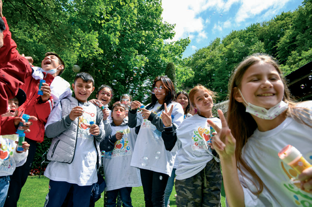
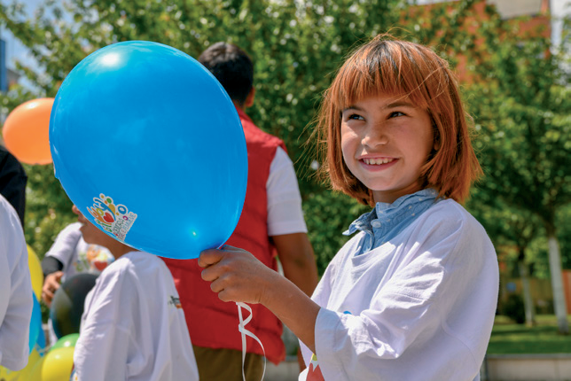
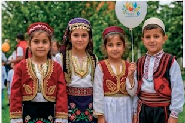
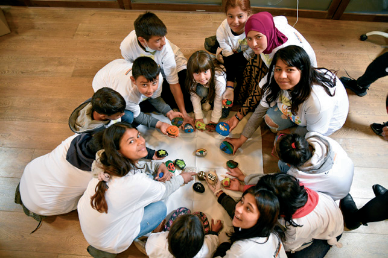
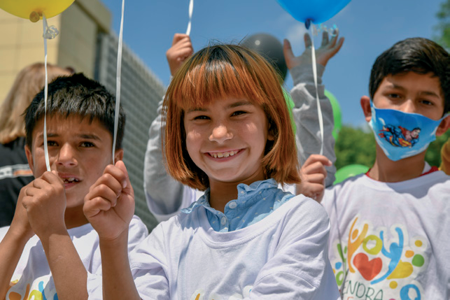
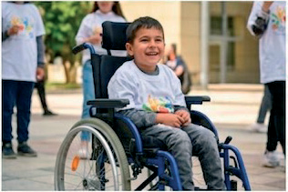

Llojllojshmëria etnike e kulturore
- A mendon që në fotografitë e mëposhtme, ka diversitet etnik e kulturor? Pse?






- A mendon që në fotografitë e mëposhtme, ka diversitet etnik e kulturor? Pse?





